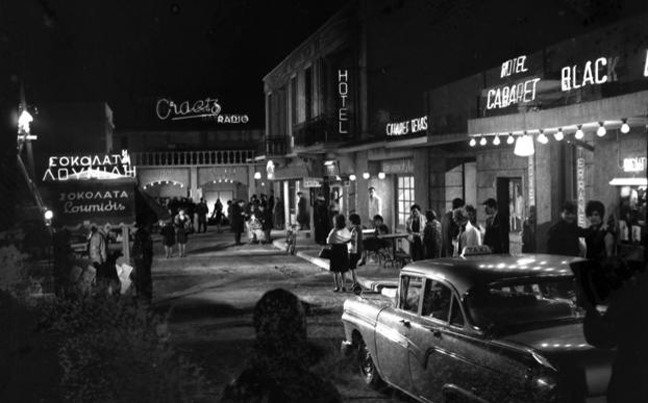

Η Τρούμπα ήταν η πιο κακόφημη συνοικία του Πειραιά, επί σειρά ετών, καθώς ήταν γνωστή για τους οίκους ανοχής και τα καμπαρέ που διέθετε. Η περιοχή πήρε το όνομά της από την αντλία (τρόμπα) που ήταν τοποθετημένη από το 1860 σε πηγάδι, στην περιοχή αυτή, στην αρχή της οδού Αιγέως, (σημερινής 2ας Μεραρχίας) στον Πειραιά και εφοδίαζε με νερό τα πλοία. Η Τρούμπα ήταν στις δόξες της τη δεκαετία του ’50 – ’60 και η «χρυσή εποχή» της κράτησε περίπου 20 χρόνια, ενώ στους δρόμους της βρίσκονταν τα πιο διάσημα «κακόφημα» καμπαρέ που άφησαν εποχή, όπως το «Τζων Μπουλ» και το «Μπλακ Κατ» που με στριπτιζ και κονσομασιόν προσπαθούσαν να ικανοποιήσουν τους απαιτητικούς πελάτες. Παράλληλα στην Τρούμπα μεγαλούργησαν και πολλοί γνωστοί ρεμπέτες, ο Μάρκος Βαμβακάρης ο Παπαϊωάννου, ο Κερομύτης και ο Νίκος ο Πουνέντης. Μέρα και βράδυ από όποιο καφενείο πέρναγες, άκουγες μπουζούκι και μπαγλαμά και ένιωθες την μυρωδιά του χασίς από ναργιλέ και από τσιγαριλίκι. Όσοι έπαιζαν μπουζούκι, συνήθως ήταν άνθρωποι της τούφας και το είχαν μάθει στη φυλακή. Το 1967 απαγορεύτηκαν όλες οι δραστηριότητες στην περιοχή. Το 1967 ο τότε δήμαρχος Πειραιά Αριστείδης Σκυλίτσης αποφασίζει την απαγόρευση όλων των δραστηριοτήτων στην περιοχή, αφού πέραν των συνθηκών που είχαν δημιουργήσει γκέτο για τους Πειραιώτες, η εγκατάσταση ναυτιλιακών εταιρειών στην Ακτή Μιαούλη ήταν μία καλή ευκαιρία για αναδόμηση, εκκαθάριση και ανάπτυξη της περιοχής. Μέχρι το 1970 το λιμενικό είχε πλέον τον πλήρη έλεγχο, ενώ τα περισσότερα νυχτερινά κέντρα και τα καταγώγια της εποχής κατεδαφίστηκαν. Σήμερα στην περιοχή στεγάζονται το δικαστικό Μέγαρο Πειραιά και Διευθύνσεις του ΝΑΤ και του Υπουργείου Ναυτιλίας.
Ίσως η πιο παρεξηγημένη περιοχή της νεότερης Ιστορίας του Πειραιά.
Η περιοχή πήρε το όνομά της από την αντλία (τρόμπα) που ήταν τοποθετημένη από το 1860 σε πηγάδι, στην αρχή της οδού Αιγέως, (σημερινής 2ας Μεραρχίας) και εφοδίαζε με νερό τα πλοία.
Η Τρούμπα τη δεκαετία του ’50 – ’60 έζησε τη λεγόμενη «χρυσή εποχή» η οποία κράτησε περίπου 20 χρόνια. Η αρχιτεκτονική των σπιτιών ευνόησε τη δημιουργία οίκων ανοχής αλλά και των περιβόητων καμπαρέ που άφησαν εποχή, όπως το «Τζων Μπουλ» και το «Μπλακ Κατ».
Παράλληλα η Τρούμπα διατήρησε τη λαική της κληρονομιά και μεγαλούργησε
μουσικά δημιουργώντας ένα μοναδικό στον κόσμο ήχο : το Ρεμπέτικο.
Οι μεγάλοι ρεμπέτες μεγαλούργησαν, ο Μάρκος Βαμβακάρης, ο Παπαϊωάννου, ο Κερομύτης και ο Νίκος ο Πουνέντης, έπαιξαν μουσική την οποία αργότερα θαύμασαν μουσικές διάνοιες όπως ο Jimmy Hendrix.
To 1967 απαγορεύτηκαν όλες οι δραστηριότητες στην περιοχή. Η επανάγνωση της ιστορίας σήμερα δίνει τα εύσημα στην περιοχή τόσο για την άνθιση και εδραίωση της λαϊκής μουσικής όσο και για την αντιστασιακή της δράση κατά τον
2ο Παγκόσμιο Πόλεμο